Практичний досвід · журнал «ДентАрт» 2022 №3
Естетика тимчасових зубів з використанням цирконієвих коронок
Esthetics of temporary teeth with using zirconium crowns
Сьогодні, коли прагнення до краси відіграє домінуючу роль у нашому суспільстві, сучасна стоматологія не відстає і досягає прогресу в естетичній сфері. Естетика — це вчення про сутність і форми прекрасного в різних його проявах, тих конкретних деталях живого або неживого об’єкта, які роблять його привабливим для очей, тобто вчення про красу.
У сучасному цивілізованому світі правильно окреслені рівні білі зуби задають стандарт краси. Такі зуби не тільки вважаються привабливими, але й свідчать про здорове харчування, самоповагу, культуру гігієни, а також демонструють майновий статус людини.
Догляд за тимчасовими зубами є обов’язковим, однак більшість батьків випускають з поля зору ці проблеми, що призводить до труднощів під час вживання їжі, болісних відчуттів у дитини, дефектів мовлення та складнощів у встановленні соціальних контактів.
Незважаючи на те, що ці зуби тимчасові, вони повинні залишатися у ротовій порожнині в здоровому стані до моменту їх фізіологічної зміни. Бічні тимчасові зуби важливі для жування, оскільки зберігають природний простір і забезпечують правильну оклюзію; рання втрата цих зубів може призвести до втрати місця, неправильного прикусу та ретенції постійних зубів.
За наявності тимчасових молярів з великими каріозними ураженнями, множинними ураженими поверхнями або пролікованих раніше ендодонтично їх відновлення краще проводити реставраціями або коронками з повним покриттям. Повне покриття потрібне для забезпечення тривалого захисту і довговічності, а також для запобігання повторному руйнуванню таких тимчасових молярів та необхідності в переліковуванні.
Найбільш широко визнаним методом відновлення повного покриття у дитячій стоматології є використання коронок з нержавіючої сталі, які показали значний клінічний успіх і вважаються сприятливим методом реставрації для множинних поверхонь і великих каріозних уражень тимчасових молярів (докладніше цей вид реставрації зубів у дітей ми розглядали в журналі «ДентАрт» № 2 за 2019 р.).
Незважаючи на позитивні якості, коронки з нержавіючої сталі мають поганий естетичний вигляд, що є чи не єдиним їх недоліком. Більшість батьків стали більш активно та усвідомлено планувати лікування зубів своїх дітей, що привело до підвищених вимог щодо естетичного зовнішнього вигляду. Тимчасові передні зуби верхньої щелепи домінують у зовнішньому вигляді, а їх структурна втрата не тільки впливає на естетику, але також призводить до порушення жування, поганої фонетики, нервово-м’язового дисбалансу і труднощів у соціальній та психологічній адаптації дитини.
Дитяча стоматологія давно вже йде в ногу з часом і слідує всім прогресивним течіям та сучасним технологічним напрацюванням, які існують і в «дорослій» стоматології. Тому останнім часом стають популярними і ширше використовуються для реставрації тимчасових зубів цирконієві коронки.
Найбільш відомі на зарубіжному ринку такі виробники готових цирконієвих коронок, як NuSmile ZR (NuSmile Pediatric Crowns), Kinder Krowns (Mayclin Dental Studios), KidsCrown Zirconia (Shinhung), Cheng Crowns (Peter Cheng Orthodontic Laboratory), EZ Pedo (EZ-Pedo Crowns, Inc.).
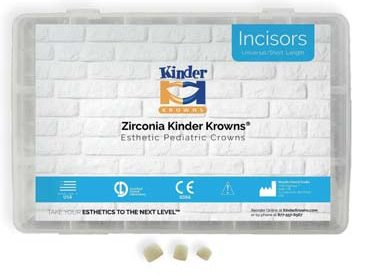
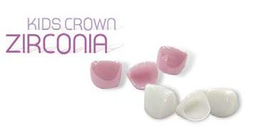
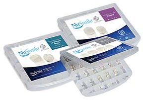
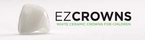
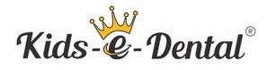
Цирконієві коронки – відносно нова тема у дитячій стоматології, вони були представлені у 2008 році як альтернативне відновне лікування. Однією з основних переваг цирконієвих коронок є їхній естетичний вигляд у поєднанні з довговічністю. Цирконій має велику історію як гарний біосумісний матеріал, а також показав чудові механічні властивості. Його міцність на згинання може досягати 1200 МПа, а ударна в’язкість — 10 МПа. Коронки з діоксиду цирконію мають більш високу міцність, яка може перевищувати утричі міцність металокерамічних коронок.
Клінічний випадок
На клінічному прикладі покажемо, як це працює практично. У нашій роботі ми використовували коронки марки Kids-e-Crown (Shinhung Co. Ltd). Лікування було проведене п'ять років тому, це була одна з перших реставрацій зі встановленням естетичних коронок. У клініку звернулися батьки з дитиною трьох років, хлопчикові поставлено діагноз – декомпенсований ступінь активності карієсу (множинні ураження бічних і фронтальних зубів). Лікування проводилося в умовах загального знеболювання у два етапи. Під час першого відвідування проліковано та відновлено бічні зуби (у бічних ділянках при відновленні молярів використовували стандартні сталеві коронки). У друге відвідування відновлювали фронтальні зуби. Перед початком лікування було зроблено фотореєстрацію за протоколом (фото 4-6).
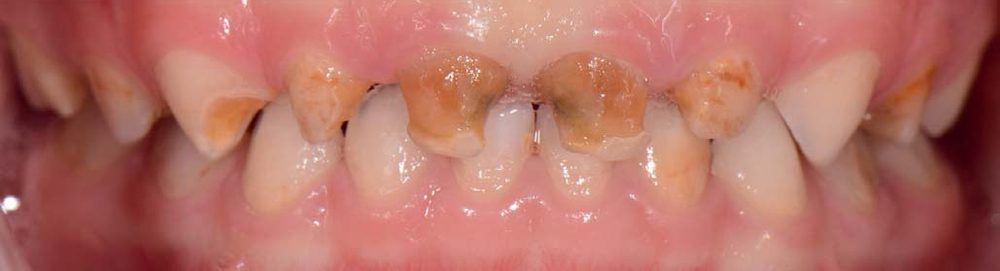
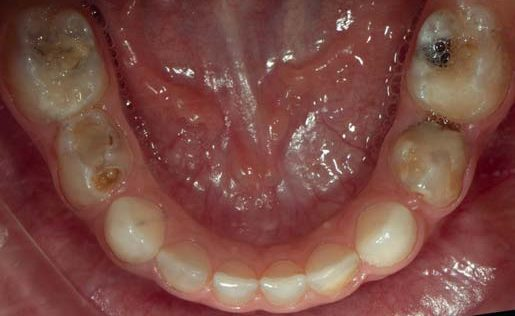
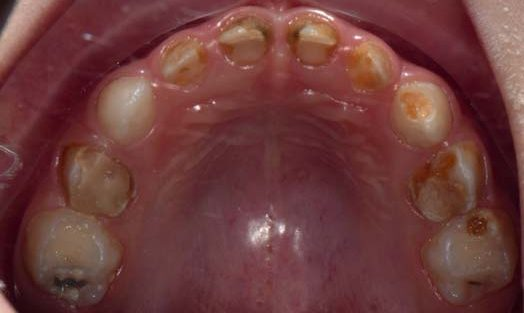
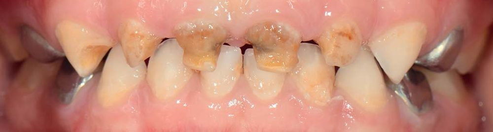
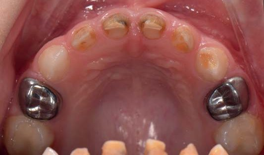
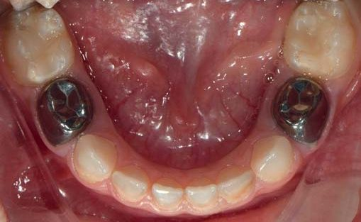
Обробка передніх зубів під цирконієві коронки має деякі особливості. Спочатку визначають розмір, враховуючи мезіодистальний розмір коронки зуба, після цього препарують по ріжучому краю, вкорочуючи його на 1,5–2 мм. Наступним етапом обробляється ясенна частина зуба – препарування здійснюють навколо зуба, знімаючи при цьому 0,5–1 мм природних тканин (на товщину майбутньої коронки), після чого проводять під'ясенне препарування на глибину 2 мм без формування уступу. Згладжуються всі гострі краї та проводиться контроль кровотечі з ясенного краю.
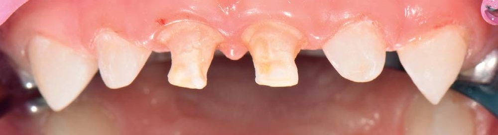
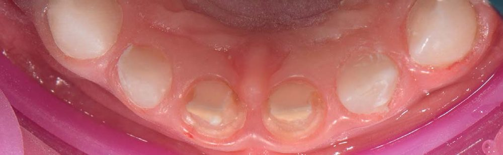
Під час примірки коронка повинна без тиску та зусиль заходити під ясна і щільно прилягати до тканин зуба. Фіксують цирконієві коронки на склоіономерний цемент світлих відтінків, оскільки коронки напівпрозорі. Одразу після фіксації ясна можуть мати ціанотичний відтінок, але протягом кількох днів колір ясен відновлюється.
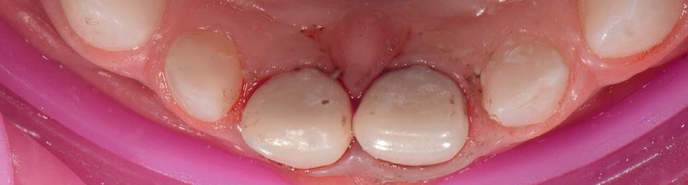
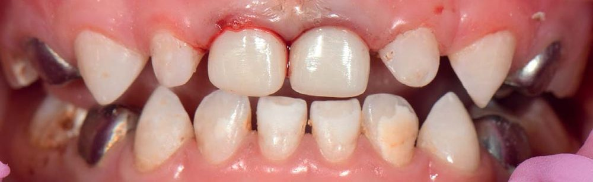
Тонка лабіальна структура доступних готових коронок із діоксиду цирконію нагадує натуральний тимчасовий передній зуб, забезпечуючи кращу адаптацію тканин ясен. Цирконій має чудову поліровану поверхню, що запобігає забарвлюванню та накопиченню зубного нальоту – на відміну від коронок із композитних матеріалів. І навіть після кількох років адгезія мікроорганізмів на поверхні матеріалу менша, ніж на сусідніх зубах.
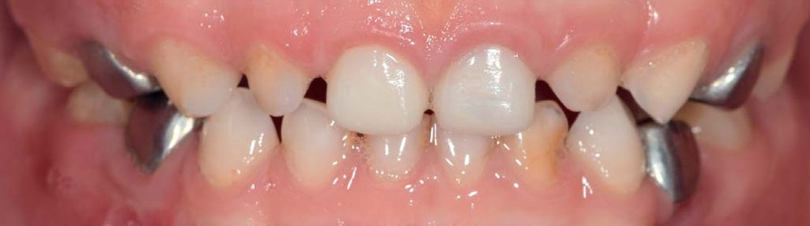
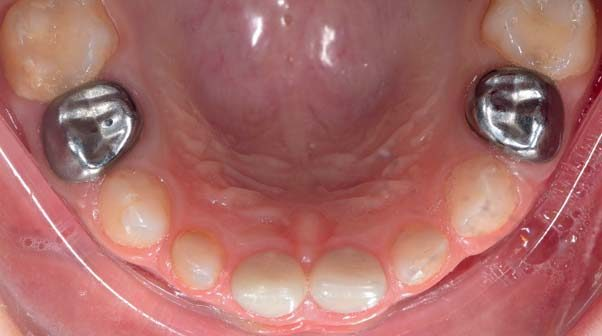
Для демонстрації швидкого відновлення ясен після препарування наводимо інший клінічний випадок, коли відновлення робилося на бічних зубах. Слід враховувати, що і цирконієві коронки мають деякі клінічні обмеження й недоліки, оскільки вимагають агресивної редукції зубів та досить дорогі.
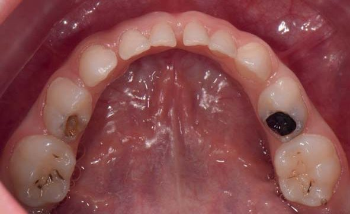
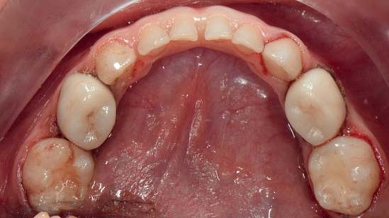
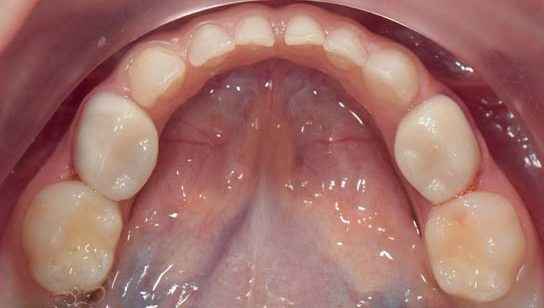
Висновки
Дитячі стоматологи нині мають багато можливостей для відновлення тимчасових різців, уражених карієсом, але через обмежені контрольовані клінічні дані важко запропонувати якийсь один найкращий реставраційний матеріал. Факторами, що впливають на довгостроковий результат вибору матеріалу, є уподобання стоматолога, естетичні вимоги батьків, співпраця дитини з лікарем, кількість тканин зуба, що залишилася, а також контроль вологості та кровотечі.
Література
- Alzanbaqi S. D., Alogaiel R. M., Alasmari M. A., Al Essa A. M., Khogeer L. N., Alanazi B. S., Hawsah E. S., Shaikh A. M., Ibrahim M. S. Zirconia Crowns for Primary Teeth: A Systematic Review and Meta-Analyses. Int J Environ Res Public Health. 2022;19:2838.
- Ashima G., Sarabjot K. Bhatia, Gauba K., Mittal H. C. Zirconia Crowns for Rehabilitation of Decayed Primary Incisors: An Esthetic Alternative. The Journal of Clinical Pediatric Dentistry. 2014;18–22.
- Clark L., Wells M. H., Harris E. F., Lou J. Comparison of amount of primary tooth reduction required for anterior and posterior zirconia and stainless steel crowns. Pediatr Dent. 2016;38(1):42–6.
- Fuks A. B., Ram D., Eidelman E. Clinical performance of esthetic posterior crowns in primary molars: a pilot study. Pediatr Dent. 1999;21(7):445–8.
- Gill A., Garcia M., An S. W. et al. Clinical comparison of three esthetic full-coverage restorations in primary maxillary incisors at 12 months. Pediatr Dent. 2020;42(5):367–72.
- Grewal N., Jha S. Restorative Solutions for Anterior Teeth in Early Childhood Caries. Journal of South Asian Association of Pediatric Dentistry. 2018;9–15.
- kidsedental.com/education-material/
Повний список літератури – в редакції.